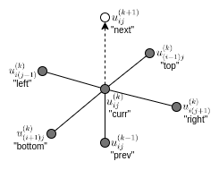

Stencil
\[ \,u^{(n+1)}_{i,j}=2u^{(n)}_{i,j}-u^{(n-1)}_{i,j}+r^2L^{(n)}_{i,j}\, \]
\[ L^{(n)}_{i,j}=u^{(n)}_{i+1,j}+u^{(n)}_{i-1,j}+u^{(n)}_{i,j+1}+u^{(n)}_{i,j-1}-4u^{(n)}_{i,j}. \]

Stencil da discretização por diferenças finitas. Nomes "next", "prev", etc correspondem ao nome do código
Primeiro passo: $u_t(\cdot,0)=0$ dá $u^{(-1)}=u^{(1)}$, logo $u^{(1)}_{i,j}=u^{(0)}_{i,j}+\tfrac{r^2}{2}L^{(0)}_{i,j}$.